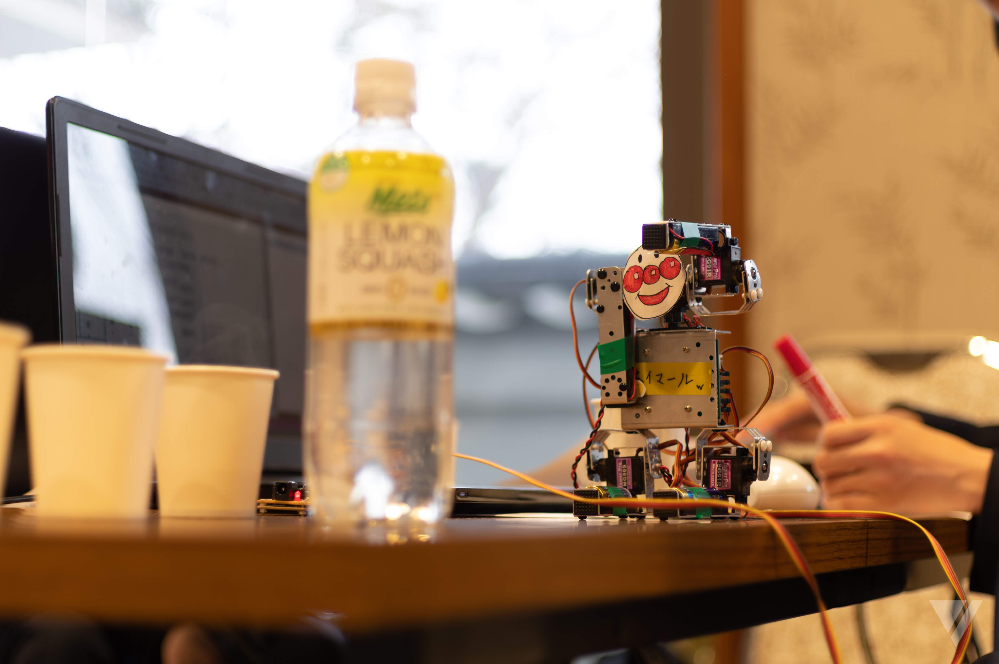
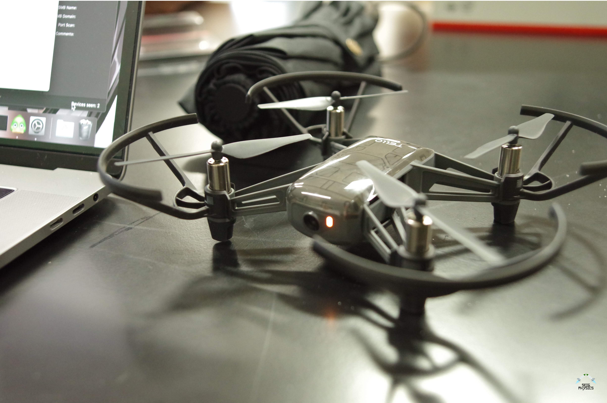
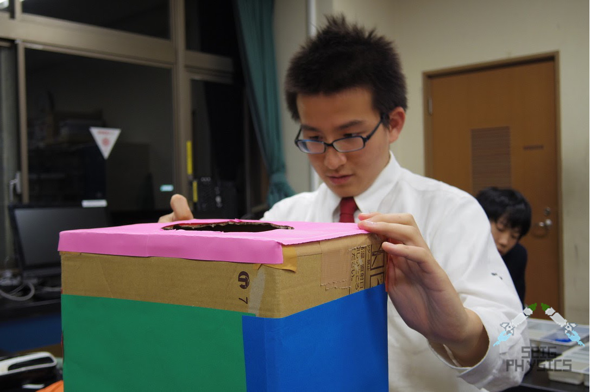

物理部は、日々様々な活動をしています。その一部を紹介します。
4足歩行ロボット
四足歩行ロボットのプログラミングは、物理部の体験入部や春合宿でも行っています。ロボットは、「VisualStudio」というソフトを使い、「VisualBasic」という言語でプログラミングしています。
学びフェスタという大会で成果を発表したり、レースで速さを競ったりします。
ロボットは「共立プロダクツ」の「プチロボ」という機種を使っています。足についている電池を動力とし、サーボモーターの角度を調整して動かします。
この研究には、とても長い歴史があり、年十年も前から行っています。歴史があるからこそ、工夫がされていて、他の学校よりも優れているところも多くあります。
ドローンプログラミング
ドローンはDJI社のTelloという機種を使っていて、Scratch,PHP,Python,VisualBasicなどの言語を試行錯誤しながら使ってプログラミングしています。 ドローンは今年から始めたばかりで、歴史はあまりありませんが、最先端の技術を使っています。ドローンは聖学院の記念祭でも体験することが出来ます。
フライトシミュレーター

フライトシミュレーター は、ドローンと同様に今年から始まりました。SFA(シアトルフライトアカデミー)に協力して頂き、コックピットを作成しています。 実際にパイロットを養成していたシミュレーターの部品を使い、操縦桿やレバーなども再現しています。今後はさらに改良して実際に養成で使えるくらいにしたいと思っています。
個人研究
個人研究では、自分で決めた研究テーマに沿って自分自身で研究し、論文にまとめます。 この論文は、理科研究発表会の冊子に掲載されます。研究テーマは様々で、ゲームや乗り換えアプリの製作、魔法瓶を振ることによる温度上昇の計測、校内の放射能の数値を計測して考察をまとめる、などがあります。 1人ひとりが、個性的な研究に取り組んでいます。
宇宙エレベーター

宇宙エレベーターは、「宇宙エレベーターロボット競技会」が主催する大会に向けて活動しています。 レゴブロックで有名なLEGO社が開発している、教育用ツールのEV3というものを使っています。このEV3にモーターなどを接続し、自分たちで考えた様々なギミックを駆使して大会に出場します。
Back to HOME